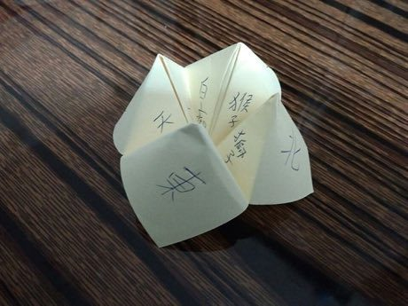
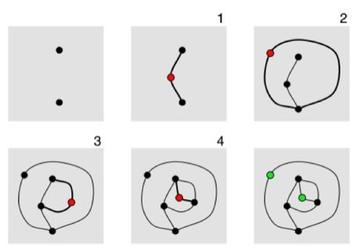
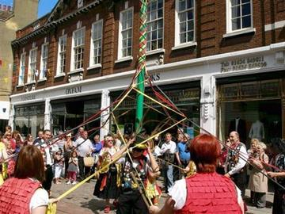
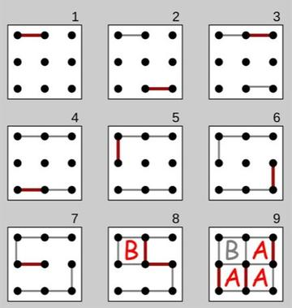
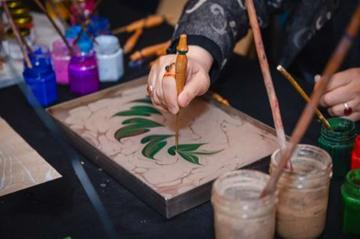

Home / Living Traditions / Celtic and Atlantic Europe
Encyclopedia ID 465
Paper Fortune Teller
Himmel und Holle (German name; use neutral title) · Cootie Catcher / Chatterbox


Fold a square into a four-flap pincher, choose colours and numbers, and open flaps to reveal a hidden message.
Heritage note
Part of the living heritage of United Kingdom, United States, Germany. Some forms of this practice carry deep meaning for the communities who keep it; here we describe the play and the craft only, with respect for its roots. Animals are partners in this tradition; good care and local rules always come first.
Origins
A living tradition passed from person to person; it is not tied to a single dated origin. It belongs to the cultural world of Celtic and Atlantic Europe.
Sources
Related entries

Sprouts
United Kingdom · Crafts and making
Ribbon-Pole Plaiting Dance
United Kingdom +4 · Dances
Dots and Boxes
France · Crafts and making
Ebru paper marbling
Turkey · Crafts and making
Ndebele geometric wall painting
South Africa · Crafts and making
Chinese knotting
China · Crafts and making